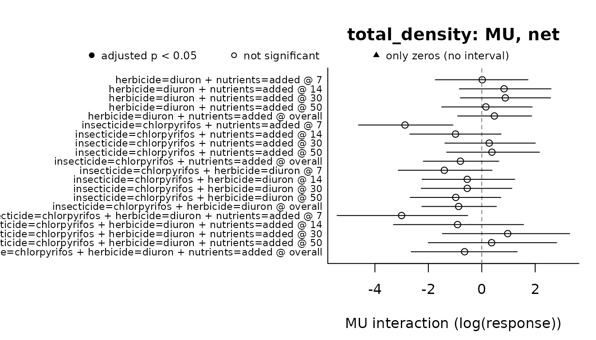

library(must)
has_emmeans <- requireNamespace("emmeans", quietly = TRUE)Calling a combined effect additive, synergistic or antagonistic is a statement about a null model, not about the data alone. must separates the three decisions behind such a statement and makes each one visible in the output:
-
What the design can identify
(
describe_design()): which treatment combinations exist, which interactions they identify, which cells are shared, how the experimental units were replicated and sampled, and whether some stressor was applied to whole groups of units. -
Which model fits the data
(
fit_responses()): a generalised linear mixed model per response, with its error distribution chosen for the data and not for the null model. -
What “non-additive” means
(
estimate_interactions()): each combination of stressors is tested against one or more null models, each on its own scale, with the same criteria and from the predictions of the same model (Madge Pimentel et al. 2025), with a correction for experiments with few replicates. Simple addition (AD) is the default (see “The default null model”); multiplication (MU) and dominance (DO), the other null models of Madge Pimentel et al. (2025), Bliss independence (BL), with the emergent three-way interaction of Beppler et al. (2016), the stress addition model (SAM) of Liess et al. (2016) and concentration addition (CA, Loewe additivity) are chosen innull_models, by name or withsuggest_null_models(), which applies the guidelines of Schäfer & Piggott (2018) to what is known about the stressors. The same tests apply to a model fitted with another package (see “Models fitted outside must”).
report_interactions() then writes the methods of the
analysis and the table of every decision behind it, from the settings of
the objects.
A worked example: insecticide, herbicide and nutrients
polazzo_zooplankton comes from an outdoor mesocosm
experiment with a full factorial of chlorpyrifos, diuron and nutrient
enrichment, three mesocosms per combination (Polazzo & Rico 2021).
Zooplankton were sampled five days before the pesticide application and
on days 7, 14, 30 and 50 after it. Because nutrient additions started
four weeks before the pesticides, day -5 is not a pre-treatment baseline
for all stressors; the example uses the four samplings after the
application. Besides the design, the table has the total density and one
column per taxon; the first eight columns are the design and the three
responses analysed below.
zoo <- polazzo_zooplankton[polazzo_zooplankton$day > 0, ]
head(zoo[, 1:8])
#> mesocosm day insecticide herbicide nutrients total_density daphnia
#> 25 M01 7 chlorpyrifos absent added 59.55818 1.2
#> 26 M02 7 absent absent added 594.79936 44.2
#> 27 M03 7 absent diuron ambient 678.32075 0.2
#> 28 M04 7 chlorpyrifos diuron added 170.78957 0.0
#> 29 M05 7 chlorpyrifos absent ambient 1686.68181 0.0
#> 30 M06 7 absent diuron added 730.98377 0.6
#> simocephalus
#> 25 1.0
#> 26 7.0
#> 27 4.6
#> 28 0.6
#> 29 1.6
#> 30 0.41. The design
design <- describe_design(
zoo,
stressors = c("insecticide", "herbicide", "nutrients"),
control = c(insecticide = "absent", herbicide = "absent", nutrients = "ambient"),
unit = "mesocosm",
time = "day"
)
design
#> <must_design> 96 rows, 3 stressors, 8 observed treatment combinations
#> Stressors (control): insecticide (absent), herbicide (absent), nutrients (ambient)
#> Unit: mesocosm | Time: day | By: none | Groups: none
#> Contrast sets: 4 candidate(s), 4 identifiable
#> Checks:
#> info Experimental unit: 'mesocosm' (24 units, each in a single
#> treatment combination).
#> info Units per treatment combination: 3.
#> info Units are measured repeatedly (4 sampling times; 4 per unit).
#> Samplings of the same unit are not independent: by default
#> fit_responses() adds a random intercept per unit, which assumes
#> the same correlation between any two samplings of a unit;
#> temporal autocorrelation can be modelled through its `random`
#> argument.
#> info Identifiable contrast sets (net deviation): 3 with 2 stressors;
#> 1 with 3 stressors.
#> info 4 identifiable set(s) share cells (one cell is used by up to 4
#> sets, typically the control): their estimates are correlated,
#> not independent replicates of an interaction.
design$sets[, c("set_id", "stressors", "net_identifiable", "pure_identifiable", "shared")]
#> set_id stressors net_identifiable pure_identifiable
#> 1 S01 herbicide x nutrients TRUE NA
#> 2 S02 insecticide x nutrients TRUE NA
#> 3 S03 insecticide x herbicide TRUE NA
#> 4 S04 insecticide x herbicide x nutrients TRUE TRUE
#> shared
#> 1 TRUE
#> 2 TRUE
#> 3 TRUE
#> 4 TRUEThe full factorial identifies the three pairwise interactions and both the net deviation and the pure interaction of the three stressors. All four sets share the control, and the mesocosms are measured repeatedly.
2. One model per response
Each response gets the candidates that suit its values (here positive densities, with zeros for Daphnia); the one selected is the one with the lowest AIC among those that converge and, by default, pass the DHARMa residual checks. The checks are switched off here only because the vignette must build without DHARMa.
fits <- fit_responses(zoo, c("total_density", "cyclopoida", "daphnia"), design,
residual_checks = FALSE, seed = 1, quiet = TRUE)
fits
#> <must_fit> 3 response(s); time structure: interaction; dispersion: common; random effects: (1 | .unit)
#> Residual checks: not run; seed: 1
#> total_density: gamma_log (log link; continuous, detected), AIC 1311.9, n = 96, missing = 0, residual checks: not run
#> cyclopoida: tweedie (log link; continuous, detected), AIC 927.8, n = 96, missing = 0, residual checks: not run
#> daphnia: tweedie (log link; continuous, detected), AIC 410.0, n = 96, missing = 0, residual checks: not run
fits$fits$total_density$selection[, c("family", "link", "converged", "aic", "selected")]
#> family link converged aic selected
#> 1 gaussian identity TRUE 1370.024 FALSE
#> 2 gaussian_log log TRUE 1346.364 FALSE
#> 3 gamma_log log TRUE 1311.942 TRUE
#> 4 lognormal log TRUE 1320.196 FALSE
fits$fits$daphnia$reason
#> [1] "Some treatment combinations have only zeros ('herbicide=diuron at 14', 'herbicide=diuron at 30', 'herbicide=diuron at 50' and 3 more): their means are fixed at the boundary of the link function, and contrasts that use them are tested from the probability of that outcome."Daphnia was absent from every mesocosm of some treatment
combinations on some days. With a log link their means lie on the
boundary of the parameter space, where intervals from the model are not
valid, so they are fixed there. When such a combination is the one a
contrast compares with its reference (the herbicide alone against the
control, say), the contrast is tested from the probability of observing
only zeros if the null model held (status = "boundary");
when it is a cell the null model needs to compute its expectation, the
contrast is not_estimable.
3. Which null models?
suggest_null_models() applies the guidelines of Schäfer
& Piggott (2018, Fig. 3) to what is known about the stressors.
Chlorpyrifos inhibits an enzyme of the nervous system, diuron the
photosynthesis of algae, and the nutrients add resources: the three
stressors do not act similarly, and the insecticide acts specifically on
physiology. The effect is a change in density, not mortality, and with
one level of each stressor the experiment gives no stressor-effect
relationship. How the sensitivities of the taxa to the stressors are
correlated is not known, nor is the distribution of their sensitivities,
so both are left unknown (NA, the default). The effects of
each stressor alone, as shares of the effect limit (here the loss of the
whole density), are estimated from the models in every contrast set and
on every day, without using the combinations of stressors.
choice <- suggest_null_models(fits, similar_action = FALSE, specific_action = TRUE,
mortality = FALSE, stressor_effect = FALSE)
choice
#> <must_null_models> after the guidelines of Schäfer and Piggott (2018), Fig. 3
#> Criteria:
#> The stressors act similarly (same mode of action) no
#> One stressor acts specifically on physiology yes
#> The effect is mortality no
#> The stressor-effect relationship is known no
#> The sensitivity distribution is known unknown
#> Correlation of the sensitivities unknown
#> The effect of one stressor is close to the effect limit (at least 90%) varies (estimated): no in 20, uncertain in 28 of 48 contrast sets and times
#> The sum of the effects compared with the effect limit varies (estimated): below in 12, uncertain in 36 of 48 contrast sets and times
#> A stressor alone increases the response varies (estimated): no in 28, yes in 12, uncertain in 8 of 48 contrast sets and times
#> Stressors alone with opposite effects varies (estimated): no in 42, uncertain in 6 of 48 contrast sets and times
#> Effects of the stressors alone: estimated in 48 of 48 contrast sets and
#> times of 3 responses, with 95% intervals.
#> In 13 of them the point estimates put one effect close to the limit
#> or at about ten times the others: the null models predict similar
#> joint effects there.
#> Directions of the effects (types of Piggott et al. 2015): double
#> neutral in 22, unknown in 13, positive neutral in 7, all neutral in
#> 6.
#> Where a stressor alone increases the response, the increase offsets
#> the decreases in the sum of the effects, and concentration addition
#> and the stress addition model are not reached.
#> Null models:
#> AD (simple addition): possible in 48 of 48. Step 4: the sensitivities
#> are highly negatively correlated and the sum of the effects is
#> below the effect limit; step 7: none of the earlier steps applies.
#> MU (multiplicative): possible in 36 of 48. Step 6: the sum of the
#> effects exceeds the effect limit. The effect addition of
#> ecotoxicology: "BL" (Bliss independence) gives the same prediction,
#> with the deviation relative to the reference cell.
#> DO (dominance): possible in 48 of 48. Step 3: the sensitivities are
#> highly positively correlated, or the effect of one stressor is
#> close to the effect limit. Allowed by the design: some sets.
#> Dominance is defined for two stressors only: sets of three or more
#> stressors are not estimated.
#> SAM (stress addition): excluded. The stress addition model needs one
#> stressor that acts specifically on physiology, mortality as the
#> effect, stressors that do not increase the response and a known
#> stressor-effect relationship or sensitivity distribution (step 2),
#> but the effect is not mortality.
#> CA (concentration addition): excluded. Concentration addition needs
#> stressors that act similarly, with effects in the same direction,
#> and a known stressor-effect relationship (step 1), but the
#> stressors do not act similarly and their stressor-effect
#> relationship is not known.
#> Unknown criteria that would change the choice:
#> Correlation of the sensitivities (`correlation`): positive -> DO;
#> negative -> AD, MU, DO; weak -> AD, MU, DO
#> For estimate_interactions(): null_models = c("AD", "MU", "DO")
table(choice$sets$response, choice$sets$type, useNA = "ifany")
#>
#> all neutral double neutral positive neutral <NA>
#> cyclopoida 3 10 3 0
#> daphnia 0 2 1 13
#> total_density 3 10 3 0The unknown correlation of the sensitivities keeps dominance (if it were highly positive) besides simple addition and the multiplicative model, and in most sets and days the effects are too uncertain to tell whether their sum exceeds the effect limit, which would call for the multiplicative model.
Stressors need not reduce a response. With three mesocosms per
treatment most single effects cannot be told from zero
("double neutral"), but the insecticide increases the total
density on day 7 and the cyclopoid copepods on day 50, and the nutrients
increase Daphnia on days 14 and 30
("positive neutral", the types of Piggott et al. 2015); the
cells of Daphnia with only zeros give no interval, so their
direction is not known (NA). The guidelines take such
effects with their sign: an increase offsets the decreases in the sum of
the effects, which exceeds the effect limit when simple addition would
predict a density below zero, and it rules out concentration addition
and the stress addition model, which assume effects in one direction and
stressors that reduce the response. For a proportion such as survival
that the stressors alone increase, the guidelines are applied to its
complement, and estimate_interactions() then needs the
sensitivity that the suggestion gives. The guidelines were
written for individuals and populations; for a community total, Schäfer
& Piggott (2018) point to the compositional null model of Thompson
et al. (2018), which predicts it from the null models of each taxon.
choice$sets gives the null models reached in each set and
day.
4. Null models
The guidelines leave the three null models of Madge Pimentel et
al. (2025). estimate_interactions() takes them from
choice and keeps its criteria and reasons in
settings$null_model_choice:
est <- estimate_interactions(fits, null_models = choice, n_sim = 4000, seed = 2021)
e <- est$estimates
triple <- e[e$response == "total_density" & e$order == 3L & e$component == "interaction" &
e$null_model != "DO",
c("time", "null_model", "estimand", "estimate", "lower", "upper", "df",
"p_value", "p_adjusted", "status")]
triple
#> time null_model estimand estimate lower upper df
#> 140 7 AD net -1584.3928039 -3773.332977 -319.8926961 16
#> 141 7 AD pure 644.7171382 -1123.100163 2799.5527597 16
#> 146 7 MU net -3.0019073 -5.416250 -0.5298598 16
#> 147 7 MU pure 1.2552274 -1.210669 3.5921941 16
#> 153 14 AD net -291.2212972 -1395.583516 810.1136139 16
#> 154 14 AD pure -672.0256073 -2643.776631 687.1611355 16
#> 159 14 MU net -0.9067135 -3.305019 1.5636066 16
#> 160 14 MU pure -0.2166525 -2.526591 2.1748717 16
#> 166 30 AD net 231.4838641 -638.940101 1261.0871765 16
#> 167 30 AD pure 24.6511477 -1083.843032 1110.7695513 16
#> 172 30 MU net 0.9718122 -1.472525 3.2916701 16
#> 173 30 MU pure 0.3535512 -2.019895 2.7604308 16
#> 179 50 AD net 8.4339010 -1063.035703 1204.6764574 16
#> 180 50 AD pure 353.4447110 -593.429209 1492.4134020 16
#> 185 50 MU net 0.3694890 -2.003136 2.8015817 16
#> 186 50 MU pure 0.8069171 -1.634400 3.1436660 16
#> 192 overall AD net -408.9240840 -1468.128198 495.5234629 16
#> 193 overall AD pure 87.6968474 -1027.714254 1176.7080566 16
#> 198 overall MU net -0.6418299 -2.640329 1.3249497 16
#> 199 overall MU pure 0.5497608 -1.434721 2.4811811 16
#> p_value p_adjusted status
#> 140 0.0230 0.1840000 ok
#> 141 0.4135 0.5600000 ok
#> 146 0.0210 0.1680000 ok
#> 147 0.2950 0.8245000 ok
#> 153 0.4875 0.8770909 ok
#> 154 0.2780 0.5600000 ok
#> 159 0.4500 0.7403636 ok
#> 160 0.8245 0.8245000 ok
#> 166 0.5660 0.8770909 ok
#> 167 0.9625 0.9625000 ok
#> 172 0.3890 0.7403636 ok
#> 173 0.7605 0.8245000 ok
#> 179 0.9740 0.9935000 ok
#> 180 0.4200 0.5600000 ok
#> 185 0.7585 0.8668571 ok
#> 186 0.5025 0.8245000 ok
#> 192 0.3020 0.3825000 ok
#> 193 0.8480 0.8480000 ok
#> 198 0.5130 0.5130000 ok
#> 199 0.5805 0.5805000 okOn day 7 the net deviation of the three stressors is negative under
AD and MU, while the pure three-way interaction is not: the deviation is
carried by the pairwise interactions, which the full factorial lets us
estimate. After the adjustment for the many sets and times tested,
neither is significant with 24 mesocosms. The rows with
time = "overall" average each effect over the four
samplings.
pairs7 <- e[e$response == "total_density" & e$time == "7" & e$order == 2L &
e$component == "interaction" & e$null_model != "DO",
c("stressors", "null_model", "estimate", "lower", "upper", "p_adjusted")]
pairs7
#> stressors null_model estimate lower upper
#> 4 herbicide x nutrients AD 2.007259e+02 -1163.000647 1755.7992896
#> 8 herbicide x nutrients MU 1.796003e-02 -1.738837 1.7303797
#> 49 insecticide x nutrients AD -1.502493e+03 -3597.879520 -479.7616286
#> 53 insecticide x nutrients MU -2.873597e+00 -4.616498 -1.0803669
#> 94 insecticide x herbicide AD -9.273429e+02 -2796.992011 133.6516840
#> 98 insecticide x herbicide MU -1.401498e+00 -3.128813 0.3860525
#> p_adjusted
#> 4 0.8916923
#> 8 0.9820000
#> 49 0.0960000
#> 53 0.0720000
#> 94 0.4640000
#> 98 0.5893333
summary(est)
#> Interactions: Krinsky-Robb simulation; small-sample correction; adjusted p-values (BH) below 0.05
#> Deviating / tested interactions by sampling time:
#> response model estimand 7 14 30 50 overall
#> total_density AD net 0/4 0/4 0/4 0/4 0/4
#> total_density MU net 0/4 0/4 0/4 0/4 0/4
#> total_density DO net 0/3 0/3 0/3 0/3 0/3
#> total_density AD pure 0/1 0/1 0/1 0/1 0/1
#> total_density MU pure 0/1 0/1 0/1 0/1 0/1
#> cyclopoida AD net 0/4 0/4 0/4 0/4 0/4
#> cyclopoida MU net 0/4 0/4 0/4 0/4 0/4
#> cyclopoida DO net 0/3 0/3 0/3 0/3 0/3
#> cyclopoida AD pure 0/1 0/1 0/1 0/1 0/1
#> cyclopoida MU pure 0/1 0/1 0/1 0/1 0/1
#> daphnia AD net 0/1 0/0 0/1 0/1 0/0
#> daphnia MU net 0/1 0/0 0/1 0/1 0/0
#> daphnia DO net 0/1 0/0 0/1 0/1 0/0
#> daphnia AD pure 0/0 0/0 0/0 0/0 0/0
#> daphnia MU pure 0/0 0/0 0/0 0/0 0/0
#>
#> Classes of the net deviations (Piggott et al. 2015) by sampling time:
#> response model 7 14 30 50 overall
#> total_density AD 4 AD 4 AD 4 AD 4 AD 4 AD
#> total_density MU 4 AD 4 AD 4 AD 4 AD 4 AD
#> cyclopoida AD 4 AD 4 AD 4 AD 4 AD 4 AD
#> cyclopoida MU 4 AD 4 AD 4 AD 4 AD 4 AD
#> daphnia AD 1 AD 1 AD 1 AD
#> daphnia MU 1 AD 1 AD 1 AD
#>
#> Agreement between null models (AD, MU, DO), robust/model-dependent/conflicting/none:
#> response estimand 7 14 30 50 overall
#> total_density net 0/0/0/4 0/0/0/4 0/0/0/4 0/0/0/4 0/0/0/4
#> total_density pure 0/0/0/1 0/0/0/1 0/0/0/1 0/0/0/1 0/0/0/1
#> cyclopoida net 0/0/0/4 0/0/0/4 0/0/0/4 0/0/0/4 0/0/0/4
#> cyclopoida pure 0/0/0/1 0/0/0/1 0/0/0/1 0/0/0/1 0/0/0/1
#> daphnia net 0/0/0/1 0/0/0/0 0/0/0/1 0/0/0/1 0/0/0/0
#> daphnia pure 0/0/0/0 0/0/0/0 0/0/0/0 0/0/0/0 0/0/0/0
#>
#> Counts of boundary tests and of rows not estimated: `$interactions`; classes: `$classes`.5. Classes
cls <- classify_interactions(est)
table(cls$class, cls$order, useNA = "ifany")
#>
#> 2 3
#> AD 66 20
#> <NA> 69 25
cls[cls$response == "total_density" & cls$time == "7" & cls$null_model == "AD",
c("stressors", "pattern", "class", "borderline")]
#> stressors
#> 1 herbicide x nutrients
#> 16 insecticide x nutrients
#> 31 insecticide x herbicide
#> 46 insecticide x herbicide x nutrients
#> pattern class borderline
#> 1 a 0 | b 0 | i 0 AD FALSE
#> 16 a 0 | b 0 | i 0 AD TRUE
#> 31 a 0 | b 0 | i 0 AD FALSE
#> 46 insecticide 0 | herbicide 0 | nutrients 0 | i 0 AD FALSEWith the correction for small samples and the adjustment for multiple tests, no interaction of this experiment deviates clearly from the null models.
plot(est, response = "total_density", null_model = "MU")
6. Methods and decisions
report_interactions() writes the statistical methods of
this analysis from the settings of est and, if given, of
the classes and of the comparison of null models: the design, the model
selected for each response and how, the null models and the criteria
behind them, and how the interactions were estimated and tested, with
the works cited. Every value comes from the objects, so the text matches
the analysis that was run; the description of the experiment itself
(organisms, exposure, measurements) is left to the authors.
report <- report_interactions(est, classes = cls)
cat(report$methods, sep = "\n\n")
#> The experiment combined 3 stressors, insecticide (absent and chlorpyrifos, with absent as control), herbicide (absent and diuron, with absent as control) and nutrients (ambient and added, with ambient as control), in a full factorial design (8 treatment combinations), with 3 experimental units (mesocosm) per combination, sampled at 4 times (day 7, 14, 30 and 50). The design identified 4 contrast sets: 3 pairwise interactions and 1 three-way interaction, with the stressors outside each set at their control.
#>
#> The analysis was run with the R package must 0.2.0 (Amador Crespo 2026) in R 4.6.2 (R Core Team 2026). Each response (total_density, cyclopoida and daphnia) was modelled with a generalized linear mixed model with one mean per treatment combination and sampling time (a cell-means model) and a random intercept for each mesocosm, fitted by maximum likelihood with glmmTMB 1.1.15.2 (Brooks et al. 2017). The error distribution was chosen among candidates suited to the values of each response (Gaussian (identity link), Gaussian (log link), Gamma (log link) and lognormal (log link), for total_density; Gaussian (identity link), Gaussian (log link) and Tweedie (log link), for cyclopoida and daphnia): the candidate that converged with a positive-definite Hessian and had the lowest AIC was selected. The models selected were Gamma (log link) for total_density; Tweedie (log link) for cyclopoida and daphnia. The means of the treatment combinations with only zeros (6 for daphnia) were fixed at the boundary of the link function; a contrast that compares such a combination with its expectation was tested from the probability of observing only zeros under that expectation, and contrasts that need such a combination to compute it were not estimated. For the inference, the selected models were refitted by restricted maximum likelihood (REML).
#>
#> Each interaction was tested against simple addition (AD), the multiplicative model (MU) and dominance (DO). The null models were chosen with the guidelines of Schäfer & Piggott (2018), in which must adds two conditions: concentration addition requires that the stressors alone act in the same direction, and stress addition that none of them increases the response. The authors stated that the stressors do not act similarly, one of them acts specifically on physiology, the effect is not mortality and the stressor-effect relationships are not known. They did not state whether the distribution of sensitivities is known or how the sensitivities are correlated. The criteria that depend on the effects of the stressors alone (whether one effect reaches 90% of the effect limit, whether their sum exceeds the limit, whether a stressor alone increases the response and whether two act in opposite directions) were evaluated from the effects estimated by the models in each contrast set and sampling time, with 95% intervals; a criterion was not known when the interval spanned its threshold. Each criterion that was not known (or that differed among contrast sets) took each of its values, and every null model reached was kept.
#>
#> Following Madge Pimentel et al. (2025), each interaction was computed from the means predicted by the models with the random effects at zero (post-estimation inference), as the deviation of the combination of stressors from the expectation of the null model, as a difference on the scale of the response (AD and DO) and as a difference on the log scale (MU). For sets of three or more stressors, both the net deviation from the single effects and the pure highest-order interaction (under AD and MU) were estimated. Dominance is defined for two stressors only. Uncertainty was obtained from 4,000 draws of the fixed effects from their estimated distribution (Krinsky & Robb 1986), which gave percentile intervals and two-sided p-values. To correct for small samples, the covariance came from the REML refit and the distributions were t, with the degrees of freedom given by the replication of the experimental units (16). Intervals were computed at the 95% level, and p-values were adjusted for the false discovery rate (Benjamini & Hochberg 1995) within each response, null model and estimate, across contrast sets and sampling times; effects averaged over the sampling times were tested and adjusted separately. Random numbers were generated with seed 2021.
#>
#> Interactions were classified with the directional scheme of Piggott et al. (2015): each single, combined and interaction effect was coded as positive, negative or not significant from its adjusted p-value (alpha = 0.05), and each net interaction was classed as additive (no deviation detected), as a positive or negative synergism or as a positive or negative antagonism (their Table 1). Dominance, which does not predict the combination from the single effects, was not classified. For three or more stressors, the same rules were applied to the net deviation and the single effects of all the stressors of the set; pure interactions were not classified.The table of decisions gives, for every argument, the value used, its
default and its source: the default, set by the user, chosen by must
(the distribution selected, a seed drawn at random), estimated (criteria
of the guidelines evaluated from the effects), taken from
suggest_null_models() or recorded (versions). The decisions
that differ from the defaults are those a reviewer will look for
first:
changed <- !report$decisions$source %in% c("default", "recorded")
report$decisions[changed, c("decision", "value", "source")]
#> decision
#> 1 Stressors and their control levels
#> 2 Experimental unit
#> 3 Sampling time
#> 15 Residual checks with DHARMa
#> 16 Distribution selected (total_density)
#> 17 Distribution selected (cyclopoida)
#> 18 Distribution selected (daphnia)
#> 19 The stressors act similarly (same mode of action)
#> 20 One stressor acts specifically on physiology
#> 21 The effect is mortality
#> 22 The stressor-effect relationship is known
#> 28 The effect of one stressor is close to the effect limit (at least 90%)
#> 29 The sum of the effects compared with the effect limit
#> 30 A stressor alone increases the response
#> 31 Stressors alone with opposite effects
#> 32 Null models
#> 34 Number of simulation draws
#> 41 Seed of the simulations
#> value
#> 1 insecticide (control absent), herbicide (control absent), nutrients (control ambient)
#> 2 mesocosm
#> 3 day
#> 15 FALSE
#> 16 Gamma (log link)
#> 17 Tweedie (log link)
#> 18 Tweedie (log link)
#> 19 no
#> 20 yes
#> 21 no
#> 22 no
#> 28 varies (no in 20, uncertain in 28 of 48 contrast sets and times)
#> 29 varies (below in 12, uncertain in 36 of 48 contrast sets and times)
#> 30 varies (no in 28, yes in 12, uncertain in 8 of 48 contrast sets and times)
#> 31 varies (no in 42, uncertain in 6 of 48 contrast sets and times)
#> 32 AD, MU, DO
#> 34 4000
#> 41 2021
#> source
#> 1 set
#> 2 set
#> 3 set
#> 15 set
#> 16 chosen
#> 17 chosen
#> 18 chosen
#> 19 set
#> 20 set
#> 21 set
#> 22 set
#> 28 estimated
#> 29 estimated
#> 30 estimated
#> 31 estimated
#> 32 suggest_null_models()
#> 34 set
#> 41 setprint(report) shows the paragraphs, the table and the
references as plain text. In an R Markdown or Quarto document, a chunk
with results = "asis" and
cat(format(report, format = "markdown"), sep = "\n")
inserts them as paragraphs, a table and a list of references. A
justification of the null models can be added with
justification.
Additive, or only not detected?
A non-significant interaction is a failure to detect a deviation:
with few replicates most interactions are classed “AD” whatever their
true size. To claim that a combination follows a null model, declare
before the analysis the largest deviation that would be negligible, as a
share of the response of the reference cell, in margin.
Each interaction is then also tested for equivalence, with two one-sided
tests (Schuirmann 1987; Lakens et al. 2018), on its relative deviation,
(observed − expected) / reference, which is on the same scale for every
null model. Each test measures how many standard errors separate the
estimated means from the closest means at which the deviation equals the
margin, on a scale on which the variance of a mean does not depend on
the mean (the square root for counts, for example), so it does not
depend on inference.
In ten tanks per combination where copepods follow the multiplicative model exactly:
tanks <- expand.grid(salinity = c("ambient", "high"), warming = c("no", "yes"),
replicate = 1:10, stringsAsFactors = FALSE)
tanks$tank <- seq_len(nrow(tanks))
mu <- 100 * ifelse(tanks$salinity == "high", 0.7, 1) * ifelse(tanks$warming == "yes", 0.8, 1)
tanks$copepods <- qpois((tanks$replicate - 0.5) / 10, mu)
tank_design <- describe_design(tanks, c("salinity", "warming"),
control = c(salinity = "ambient", warming = "no"), unit = "tank")
tank_fit <- fit_responses(tanks, "copepods", tank_design, residual_checks = FALSE,
seed = 1, quiet = TRUE)
eq <- estimate_interactions(tank_fit, null_models = c("AD", "MU"), n_sim = 4000, seed = 1,
margin = 0.1)
eq$estimates[eq$estimates$component == "interaction",
c("null_model", "relative", "relative_lower", "relative_upper", "p_adjusted",
"p_equivalence_adjusted")]
#> null_model relative relative_lower relative_upper p_adjusted
#> 4 AD 0.0609390609 -0.05411084 0.16638163 0.276
#> 8 MU 0.0007594803 -0.08749538 0.07863754 0.986
#> p_equivalence_adjusted
#> 4 0.2351589
#> 8 0.0144178
classify_interactions(eq)[, c("null_model", "class", "verdict")]
#> null_model class verdict
#> 1 AD AD inconclusive
#> 2 MU AD equivalentBoth null models give the class AD, but only the multiplicative one
is equivalent within ±10% of the control. Under simple addition no
deviation is detected, but it could be larger than the margin: the
verdict is inconclusive. A deviation detected but within the margin
would be "negligible". With three mesocosms per
combination, no interaction of the zooplankton experiment is equivalent
even within ±25% of the control: they are inconclusive, not
additive.
eq_zoo <- estimate_interactions(fits, null_models = c("AD", "MU"), n_sim = 4000, seed = 2021,
margin = 0.25)
table(classify_interactions(eq_zoo)$verdict, useNA = "ifany")
#>
#> inconclusive <NA>
#> 86 34The margin has no default: which deviation is negligible depends on
the response and on the question, and has to be fixed before the results
are seen. Equivalence also needs replication: in simulated 2 x 2
experiments with four units per combination, a margin of ±10% was never
reached. The test kept its nominal error for Gaussian responses,
survival and overdispersed counts analysed with a quasi-Poisson
glm() or with the negative binomial of
fit_responses(). It declared false equivalences too often
when a Poisson model, which ignores the overdispersion, was fitted to
the same counts (21% of the experiments, instead of 5%; that is why
fit_responses() uses the Poisson only when the negative
binomial does not converge), and with MASS::glm.nb() (10%;
see “Equivalence” in ?estimate_interactions).
Few replicates: the small-sample correction
Madge Pimentel et al. (2025) obtain the uncertainty of the null-model
contrasts by simulating the fixed effects from a normal distribution
with their estimated covariance (Krinsky & Robb 1986). With the
replication of most mesocosm experiments that is too optimistic: the
variance is estimated by maximum likelihood, which underestimates it
with few degrees of freedom, and the normal ignores the uncertainty of
that estimate. In simulated 2 x 2 experiments with three replicates per
combination, the asymptotic tests rejected a true null model in 10–17%
of the cases instead of 5%. By default
(correction = "small_sample") must refits the selected
model by REML and draws from a multivariate t whose degrees of freedom
follow the experimental units (column df). For a Gaussian
model without random effects the AD intervals of the delta method are
then exactly those of lm(), and the simulation approximates
them:
small <- data.frame(
salinity = rep(c("ambient", "high", "ambient", "high"), each = 3),
warming = rep(c("no", "no", "yes", "yes"), each = 3),
growth = c(10.2, 9.1, 10.9, 8.3, 7.4, 8.8, 7.1, 6.0, 7.6, 3.2, 4.6, 3.9)
)
small$jar <- seq_len(nrow(small))
small_design <- describe_design(small, c("salinity", "warming"),
control = c(salinity = "ambient", warming = "no"), unit = "jar")
small_fit <- fit_responses(small, "growth", small_design,
families = list(gaussian = gaussian()), residual_checks = FALSE, seed = 1, quiet = TRUE)
interaction_row <- function(x) {
x$estimates[x$estimates$component == "interaction",
c("estimate", "lower", "upper", "df", "p_value")]
}
rbind(
delta = interaction_row(estimate_interactions(small_fit, null_models = "AD",
inference = "delta")),
simulation = interaction_row(estimate_interactions(small_fit, null_models = "AD",
n_sim = 20000, seed = 1)),
asymptotic = interaction_row(estimate_interactions(small_fit, null_models = "AD",
n_sim = 20000, seed = 1,
correction = "none"))
)
#> estimate lower upper df p_value
#> delta -1.1 -3.199463 0.9994631 8 0.2614642
#> simulation -1.1 -3.236404 1.0136935 8 0.2674000
#> asymptotic -1.1 -2.564639 0.3889169 Inf 0.1423000
reference <- lm(growth ~ salinity * warming, data = small)
confint(reference)[4, ]
#> 2.5 % 97.5 %
#> -3.1994631 0.9994631
summary(reference)$coefficients[4, "Pr(>|t|)"]
#> [1] 0.2614642With repeated measures or subsamples the degrees of freedom are those
of the units (units minus treatment combinations), and for stressors
applied to whole groups of units, those of the groups. Poisson and
binomial models without random effects have no variance to estimate and
keep the normal distribution. correction = "none" gives the
asymptotic procedure, for comparison with published analyses.
Interactions in the presence of other stressors
By default each interaction is estimated with the stressors outside
the set at control: the insecticide × herbicide interaction compares
mesocosms without added nutrients. With background = "all"
the design also gives the same interaction in the presence of each level
of the other stressors, with that background as the reference:
design_all <- describe_design(zoo, c("insecticide", "herbicide", "nutrients"),
control = c(insecticide = "absent", herbicide = "absent", nutrients = "ambient"),
unit = "mesocosm", time = "day", background = "all")
design_all$sets[, c("set_id", "stressors", "background")]
#> set_id stressors background
#> 1 S01 herbicide x nutrients
#> 2 S02 insecticide x nutrients
#> 3 S03 insecticide x herbicide
#> 4 S04 insecticide x herbicide nutrients=added
#> 5 S05 insecticide x nutrients herbicide=diuron
#> 6 S06 herbicide x nutrients insecticide=chlorpyrifos
#> 7 S07 insecticide x herbicide x nutrientsWhen an increase means sensitivity
MU and DO describe mechanisms (independent action, dominance of the
strongest stressor) only when an increase in the response means
tolerance: survival rather than mortality, abundance rather than damage.
For responses measured the other way, give their names in
sensitivity: binomial responses (successes out of
trials, see fit_responses()) are then analysed
as their complement, and for other responses MU and DO are reported as
not_applicable.
jars <- data.frame(
copper = rep(c("no", "yes", "no", "yes"), each = 5),
heat = rep(c("no", "no", "yes", "yes"), each = 5),
dead = c(1, 0, 1, 2, 1, 3, 2, 4, 3, 3, 2, 3, 2, 1, 2, 8, 9, 10, 9, 9),
n = 10
)
jars$jar <- seq_len(nrow(jars))
jar_design <- describe_design(jars, c("copper", "heat"),
control = c(copper = "no", heat = "no"), unit = "jar")
jar_fit <- fit_responses(jars, "dead", jar_design, trials = c(dead = "n"),
residual_checks = FALSE, seed = 1, quiet = TRUE)
mortality <- estimate_interactions(jar_fit, null_models = c("AD", "MU", "DO"), n_sim = 4000,
seed = 1, sensitivity = "dead")
mortality$estimates[mortality$estimates$component == "interaction",
c("null_model", "estimate", "lower", "upper", "p_value", "note")]
#> null_model estimate lower upper p_value note
#> 4 AD -0.500000 -0.6910995 -0.2712554 0.00025 complement
#> 8 MU -1.828127 -2.7197856 -1.0132270 0.00025 complement
#> 9 DO -0.600000 -0.7131528 -0.4260601 0.00025 complementWhat a design can and cannot identify
A design identifies an interaction only if it contains the control, each stressor alone and their combination. Many experiments are not full factorials. In a ray design, for example, two compounds are tested alone at three doses and the mixture only at matching doses:
ray <- data.frame(
fungicide = c(0, 2, 20, 200, 0, 0, 0, 2, 20, 200),
insecticide = c(0, 0, 0, 0, 2, 20, 200, 2, 20, 200)
)
ray <- ray[rep(seq_len(nrow(ray)), each = 3), ]
ray$mesocosm <- seq_len(nrow(ray))
ray_design <- describe_design(
ray,
stressors = c("fungicide", "insecticide"),
control = c(fungicide = "0", insecticide = "0"),
unit = "mesocosm"
)
ray_design
#> <must_design> 30 rows, 2 stressors, 10 observed treatment combinations
#> Stressors (control): fungicide (0), insecticide (0)
#> Unit: mesocosm | Time: none | By: none | Groups: none
#> Contrast sets: 3 candidate(s), 3 identifiable
#> Checks:
#> info Experimental unit: 'mesocosm' (30 units, each in a single
#> treatment combination).
#> info Units per treatment combination: 3.
#> info 6 of the 16 combinations of the observed levels are absent
#> ('fungicide=2 + insecticide=20', 'fungicide=2 +
#> insecticide=200', 'fungicide=20 + insecticide=2' and 3 more).
#> Interactions that need them are not identifiable (see `sets`).
#> info Identifiable contrast sets (net deviation): 3 with 2 stressors.
#> info 3 identifiable set(s) share cells (one cell is used by up to 3
#> sets, typically the control): their estimates are correlated,
#> not independent replicates of an interaction.
ray_design$sets[, c("set_id", "levels", "net_identifiable", "shared")]
#> set_id levels net_identifiable shared
#> 1 S01 fungicide=2 | insecticide=2 TRUE TRUE
#> 2 S02 fungicide=20 | insecticide=20 TRUE TRUE
#> 3 S03 fungicide=200 | insecticide=200 TRUE TRUEOnly the three diagonal combinations are identifiable, and all three share the same control: their interaction estimates are correlated, so finding the same class at the three doses is not three independent confirmations.
A control shared by several groups, and stressors that start later
Sometimes one control serves several by groups: the same
two stressors applied as pulses or as a press, in two orders, or to
upstream and downstream ponds. Copying the control into each group would
count its units twice. shared marks the rows that belong to
every group of a by column; here the control tanks
(regime = "both") complete the sets of both regimes:
regimes <- data.frame(
regime = rep(c("both", "pulse", "pulse", "pulse", "press", "press", "press"), each = 4),
heat = rep(c("no", "yes", "no", "yes", "yes", "no", "yes"), each = 4),
pesticide = rep(c("no", "no", "yes", "yes", "no", "yes", "yes"), each = 4)
)
regimes$tank <- seq_len(nrow(regimes))
shared_design <- describe_design(
regimes,
stressors = c("heat", "pesticide"),
control = c(heat = "no", pesticide = "no"),
unit = "tank", by = "regime", shared = c(regime = "both")
)
shared_design$sets[, c("regime", "levels", "net_identifiable", "shared")]
#> regime levels net_identifiable shared
#> 1 press heat=yes | pesticide=yes TRUE TRUE
#> 2 pulse heat=yes | pesticide=yes TRUE TRUEThe two sets use the same control, so their estimates are correlated,
as in the ray design. Without shared, neither regime has a
control and nothing is identifiable.
When a stressor starts later than the others (drying from day 0,
after weeks of warming), the samplings before it are pre-treatment for
that stressor only. A named list in baseline, such as
baseline = list(drying = c(-36, -1)), keeps the
interactions that involve drying from being estimated before it was
applied, while those among the other stressors are estimated at those
times.
Units inside groups: blocks, whole plots and confounding
A stressor is often applied to whole groups of units: one temperature
per climate room, one nitrate level per header tank, CO2 per plot. Then
the replication of that stressor is the number of groups, not of jars or
mesocosms. groups tells describe_design()
which columns group the units. Here temperature is applied to whole
rooms and nutrients vary within them:
rooms <- expand.grid(temperature = c("15", "20"), room_rep = 1:2,
nutrients = c("no", "yes"), jar = 1:3, stringsAsFactors = FALSE)
rooms$room <- paste0("R", rooms$temperature, "-", rooms$room_rep)
rooms$jar_id <- seq_len(nrow(rooms))
one_room <- rooms[rooms$room_rep == 1, ]
one_design <- describe_design(
one_room,
stressors = c("temperature", "nutrients"),
control = c(temperature = "15", nutrients = "no"),
unit = "jar_id", groups = "room"
)
one_design$groups[, c("group", "between", "structure", "groups_per_combination", "random")]
#> group between structure groups_per_combination random
#> 1 room temperature confounded 1 FALSE
one_design$sets[, c("stressors", "net_identifiable", "confounded")]
#> stressors net_identifiable confounded
#> 1 temperature x nutrients TRUE TRUEWith one room per temperature, every effect of temperature, its
interaction with nutrients included, is also a difference between two
rooms: the set is confounded, and its estimates and class
carry that flag. A random intercept for rooms cannot separate them (its
variance is not identifiable), so none is added. With two rooms per
temperature the rooms are whole plots: temperature effects are
replicated by rooms, and fit_responses() adds a random
intercept for them by default.
two_design <- describe_design(
rooms,
stressors = c("temperature", "nutrients"),
control = c(temperature = "15", nutrients = "no"),
unit = "jar_id", groups = "room"
)
two_design$groups[, c("group", "between", "structure", "groups_per_combination", "random")]
#> group between structure groups_per_combination random
#> 1 room temperature whole_units 2 TRUEBlocks that hold every treatment combination
(structure = "blocks") also get a random intercept. The
design cannot reveal groups that are not in the data: a shared incubator
or water supply must be recorded to be checked.
Three or more stressors: net deviation and pure interaction
With three stressors, the deviation of ABC from the combination of the single effects (the net deviation) includes the pairwise interactions AB, AC and BC. The pure third-order interaction is what remains once those are removed, and it needs all eight combinations. In this simulated 2 x 2 x 2 experiment the pure interaction is negative, but part of the net deviation comes from the pairwise terms:
grid <- expand.grid(nitrate = c("ambient", "high"), sediment = c("no", "yes"),
flow = c("normal", "low"), stringsAsFactors = FALSE)
n <- grid$nitrate == "high"
s <- grid$sediment == "yes"
f <- grid$flow == "low"
grid$mean <- 20 - 3 * n - 4 * s - 2 * f + 1.5 * n * s - n * f + 0.5 * s * f -
2.5 * n * s * f
streams <- grid[rep(seq_len(8), each = 4), ]
streams$biomass <- streams$mean * rep(c(0.95, 1.02, 0.98, 1.05), 8)
streams$channel <- seq_len(nrow(streams))
stream_design <- describe_design(
streams,
stressors = c("nitrate", "sediment", "flow"),
control = c(nitrate = "ambient", sediment = "no", flow = "normal"),
unit = "channel"
)
stream_fit <- fit_responses(streams, "biomass", stream_design,
families = list(gaussian = gaussian()), residual_checks = FALSE, quiet = TRUE)
stream_est <- estimate_interactions(stream_fit, null_models = "AD",
inference = "delta")
int <- stream_est$estimates[stream_est$estimates$component == "interaction", ]
int[, c("stressors", "estimand", "estimate", "lower", "upper")]
#> stressors estimand estimate lower upper
#> 4 sediment x flow net 0.5 -0.92614184 1.9261418
#> 8 nitrate x flow net -1.0 -2.42614184 0.4261418
#> 12 nitrate x sediment net 1.5 0.07385816 2.9261418
#> 17 nitrate x sediment x flow net -1.5 -3.51686913 0.5168691
#> 18 nitrate x sediment x flow pure -2.5 -4.51686913 -0.4831309The net deviation of the triple equals its pure interaction plus the
three pairwise interactions. If the design lacked the pairwise
combinations, the pure interaction would be reported as
not_identifiable and describe_design() would
warn that the net deviation cannot be split.
Bliss independence and emergent interactions
Under Bliss independence (null_models = "BL"; Bliss
1939) stressors act independently, so the responses relative to the
reference cell, w = y / y0 (relative fitness or survival), multiply. The
net interaction is wABC - wA wB wC, and the emergent interaction of
Beppler et al. (2016, eq. 2.4), wABC - wA wBC - wB wAC - wC wAB + 2 wA
wB wC, is the part of the three-way deviation that the pairwise
interactions do not explain. For the stream channels:
bliss <- estimate_interactions(stream_fit, null_models = c("MU", "BL"), n_sim = 4000,
seed = 1)
b <- bliss$estimates
b[b$component == "interaction" & b$order == 3L,
c("null_model", "estimand", "estimate", "lower", "upper", "p_value", "rescaled",
"rescaled_class")]
#> null_model estimand estimate lower upper p_value rescaled
#> 29 MU net -0.2534175 -0.3868353 -0.12238921 0.0005 NA
#> 30 MU pure -0.2356213 -0.3735154 -0.09740633 0.0015 NA
#> 35 BL net -0.1370000 -0.2199437 -0.06367197 0.0005 -0.2238562
#> 36 BL pure -0.1297500 -0.2064398 -0.04819120 0.0035 -0.2145515
#> rescaled_class
#> 29 <NA>
#> 30 <NA>
#> 35 additive
#> 36 additiveThe net BL interaction tests the same hypothesis as the net MU interaction on another scale: both have the same sign in every simulation draw, so their simulated p-values coincide. The emergent interaction is a different hypothesis from the pure MU interaction, which removes the pairwise interactions on the log scale.
rescaled divides each BL interaction by its value at an
extreme (a combination with no response for negative interactions, one
equal to the most affected single stressor for positive ones; Segrè et
al. 2005, Beppler et al. 2016), and rescaled_class applies
the cut-offs of Beppler et al. (2016) at -0.5 and 0.5. Here the emergent
interaction is clearly below zero (its interval excludes zero) but small
relative to lethal synergy, and the cut-offs would call it additive.
must decides from the interval and the p-value, as for the other null
models, and reports the rescaled value only as a description of size:
fixed cut-offs ignore the uncertainty of the estimate (Madge Pimentel et
al. 2025). The emergent interaction is defined here for three stressors;
with four or more it is not_defined.
Stress addition and concentration addition
Two more null models come from ecotoxicology. The stress addition
model ("SAM"; Liess et al. 2016) assumes that each
individual tolerates a general stress drawn from a beta distribution:
the effect of each stressor alone becomes the general stress that causes
it, the stresses add up, and the predicted survival of the combination
is the share of individuals that tolerate their sum. Concentration
addition ("CA", Loewe additivity) treats each stressor as a
dilution of the others: a combination is additive when the doses, each
divided by the dose of that stressor alone with the same effect, add up
to one (Loewe 1953; Tang et al. 2015). CA needs the dose-response curve
of each stressor, so it needs at least two doses of each stressor tested
alone, with numeric levels; in two-level factorials it is
not_defined. must fits a two-parameter log-logistic curve
to the responses at those doses, relative to the control, and refits it
in each simulation draw.
In this ray design, survivors out of 20 animals per jar were generated so that the two pesticides follow concentration addition exactly:
doses <- data.frame(fungicide = c(0, 5, 20, 80, 0, 0, 0, 5, 20, 80),
insecticide = c(0, 0, 0, 0, 1, 4, 16, 1, 4, 16))
mixtures <- doses[rep(seq_len(nrow(doses)), each = 4), ]
mixtures$jar <- seq_len(nrow(mixtures))
mixtures$n <- 20
survival <- function(f, i) {
if (f == 0 && i == 0) return(0.95)
# Log-logistic curves with EC50 30 (slope 1.5) and 6 (slope 2)
eq <- function(w) f / (30 * ((1 - w) / w)^(1 / 1.5)) + i / (6 * ((1 - w) / w)^(1 / 2)) - 1
0.95 * uniroot(eq, c(1e-9, 1 - 1e-9))$root
}
p <- mapply(survival, mixtures$fungicide, mixtures$insecticide)
mixtures$alive <- qbinom(c(0.2, 0.4, 0.6, 0.8)[(mixtures$jar - 1) %% 4 + 1], 20, p)
mixture_design <- describe_design(mixtures, c("fungicide", "insecticide"),
control = c(fungicide = "0", insecticide = "0"), unit = "jar")
mixture_fit <- fit_responses(mixtures, "alive", mixture_design, trials = c(alive = "n"),
residual_checks = FALSE, seed = 1, quiet = TRUE)
mix <- estimate_interactions(mixture_fit, null_models = c("BL", "SAM", "CA"), n_sim = 4000,
seed = 1)
m <- mix$estimates
m[m$component == "interaction",
c("levels", "null_model", "estimate", "lower", "upper", "p_adjusted")]
#> levels null_model estimate lower
#> 4 fungicide=5 | insecticide=1 BL -0.0664813021 -0.22958397
#> 8 fungicide=5 | insecticide=1 SAM 0.0591415038 -0.16612942
#> 12 fungicide=5 | insecticide=1 CA -0.0010319240 -0.11463724
#> 16 fungicide=20 | insecticide=4 BL -0.0680426934 -0.23211822
#> 20 fungicide=20 | insecticide=4 SAM 0.3426774217 0.20093009
#> 24 fungicide=20 | insecticide=4 CA 0.0004280039 -0.12958529
#> 28 fungicide=80 | insecticide=16 BL 0.0283938386 -0.01355510
#> 32 fungicide=80 | insecticide=16 SAM 0.0526320269 0.01948737
#> 36 fungicide=80 | insecticide=16 CA 0.0015965112 -0.05030239
#> upper p_adjusted
#> 4 0.07088187 0.37850
#> 8 0.35553938 0.84150
#> 12 0.10348662 0.98500
#> 16 0.08589054 0.37850
#> 20 0.46049045 0.00150
#> 24 0.13306726 0.98500
#> 28 0.10618724 0.37850
#> 32 0.13336801 0.00075
#> 36 0.08461208 0.98500The same mixtures are additive under CA, show no clear deviation from Bliss independence, and are antagonistic under SAM, which predicts much larger combined effects than the other two. Which null model fits a pair of stressors is a mechanistic question that the data alone cannot settle (Tang et al. 2015; Madge Pimentel et al. 2025): name the model with each claim of synergy or antagonism.
compare_null_models() sets the null models side by
side:
compare_null_models(mix)[, c("levels", "BL", "SAM", "CA", "agreement", "direction")]
#> levels BL SAM CA agreement direction
#> 1 fungicide=5 | insecticide=1 0 0 0 none <NA>
#> 2 fungicide=20 | insecticide=4 0 + 0 model_dependent positive
#> 3 fungicide=80 | insecticide=16 0 + 0 model_dependent positiveThe deviations at the two higher doses are model-dependent: only SAM
flags them. An interaction that every plausible null model flags with
the same sign ("robust") does not depend on that choice;
one that only some of them flag, or that they flag in opposite
directions ("conflicting"), needs the mechanistic
hypothesis to be interpreted. With two or more null models,
summary() also counts these cases.
The default null model
When there is a hypothesis about how the stressors act, the null
model that represents it should be named in null_models
(Madge Pimentel et al. 2025), and suggest_null_models()
derives the null models that the guidelines of Schäfer & Piggott
(2018) give for what is known. Without either, must uses simple
addition. That default was chosen by simulation, with a rule fixed
before the results were seen: among the null models defined in two-level
factorials and with at least 80% of the highest average power against
interactions that no mechanism explains, the one with the fewest false
interactions on average over five mechanisms of no interaction, each
with the same weight. The simulated experiments were 2 x 2 factorials
and 3 x 3 dose factorials with four units per combination, with survival
out of 20 animals or overdispersed counts as the response, and moderate
or weak single effects. The data of each experiment followed one of the
five mechanisms without interaction, or a synergy (half the response
that the most harmful mechanism predicts) or an antagonism (halfway
between the most affected single stressor and the control) that none of
them explains. Each experiment was analysed with a cell-means
glm() and
estimate_interactions(model, design), and an interaction
was flagged when p < 0.05 (100 experiments per scenario).
Percentage of experiments with an interaction flagged, averaged over designs, responses and effect sizes (CA is tested in the dose design only; for two stressors MU and BL give the same test):
| Data generated by | AD | MU, BL | DO | SAM | CA |
|---|---|---|---|---|---|
| AD, no interaction | 4.8 | 10.6 | 20.2 | 28.2 | 8.1 |
| MU (BL), no interaction | 6.7 | 4.9 | 12.1 | 32.5 | 9.7 |
| DO, no interaction | 19.7 | 14.8 | 3.2 | 44.5 | 25.0 |
| SAM, no interaction | 60.2 | 76.4 | 85.8 | 4.0 | 34.7 |
| CA, no interaction | 9.7 | 13.9 | 37.9 | 23.4 | 2.6 |
| False interactions, mean | 20.2 | 24.1 | 31.9 | 26.5 | 16.0 |
| Synergy | 79.0 | 97.4 | 99.4 | 10.8 | 51.2 |
| Antagonism | 37.6 | 36.9 | 21.6 | 64.8 | 51.8 |
| Power, mean | 58.3 | 67.1 | 60.5 | 37.8 | 51.5 |
Each null model flags interactions at about the nominal rate when the
data follow its own mechanism (the diagonal); elsewhere in the first
five rows the tests are not wrong: the definitions of “no interaction”
disagree. No null model was robust to every mechanism: data generated by
stress addition looked synergistic to all the others, and data generated
by the others looked antagonistic to stress addition. AD had the fewest
false interactions among the null models that two-level factorials can
test. CA had fewer in the dose design (16%, against 23% for AD there),
with less power (51% against 63%), and needs at least two doses of each
stressor tested alone. AD was also chosen within each design, each size
of the single effects and with survival as the response. Without the
stress addition mechanism, MU and BL came within one percentage point of
AD and, being more powerful, would have been chosen; with counts only,
the power of AD fell below 80% of theirs, and they would have been
chosen too. Requiring every null model to agree
(agreement = "robust" in
compare_null_models()) flagged under 3% false interactions,
but detected only 15% of the interactions that no mechanism explains:
too strict to detect interactions, but a label for those that do not
depend on the null model.
The script, the rates of every scenario and the report of the simulation are installed with the package, so that the table can be checked and the simulation rerun or extended to other designs, effect sizes or numbers of units:
dir(system.file("simulations", package = "must"))
#> [1] "null_model_robustness.csv" "null_model_robustness.md"
#> [3] "null_model_robustness.R"source(system.file("simulations", "null_model_robustness.R", package = "must"))
repeats it with 100 experiments per scenario in about 45 minutes on two
cores (CORES <- 2 before sourcing it; parallel runs need
a Unix-alike) and about 1.5 hours on one.
Models fitted outside must
estimate_interactions() also takes a model fitted with
another package (lm(), glm(),
mgcv::gam(), lme4::glmer(),
glmmTMB::glmmTMB() and the other models supported by
emmeans) together with the design of its data. The contrast sets, null
models and tests are the same; the means of the treatment combinations
are the estimated marginal means of emmeans (random effects at zero,
other predictors averaged over), so the stressor, time and
by columns of the design must be predictors of the model.
For the small experiment above, the AD interaction of lm()
is its interaction coefficient, with the same t interval:
lm_est <- estimate_interactions(reference, small_design, null_models = c("AD", "MU", "BL"),
inference = "delta")
lm_est$estimates[lm_est$estimates$component == "interaction",
c("null_model", "estimate", "lower", "upper", "df", "p_value")]
#> null_model estimate lower upper df p_value
#> 4 AD -1.1000000 -3.1994631 0.999463075 8 0.26146419
#> 8 MU -0.3613761 -0.7120743 -0.010677804 8 0.04480957
#> 12 BL -0.1686439 -0.3384971 0.001209248 8 0.05129793Three things are left to the model and to the user. The model is used
as fitted, without the selection of fit_responses() or its
REML refit; a combination with only zeros has no usable standard error
in such models and its contrasts are not_estimable; and the
degrees of freedom are those that emmeans gives, which are infinite for
most generalized and mixed models. With few experimental units, give
them in df: here 24 mesocosms in 8 treatment combinations
leave 16.
zoo_model <- glmmTMB::glmmTMB(
total_density ~ insecticide * herbicide * nutrients * factor(day) + (1 | mesocosm),
family = Gamma(link = "log"), data = zoo
)
zoo_est <- estimate_interactions(zoo_model, design, null_models = "MU", n_sim = 4000,
seed = 2021, df = 16)
z <- zoo_est$estimates
z[z$time == "7" & z$order == 3L & z$component == "interaction",
c("estimand", "estimate", "lower", "upper", "df", "p_adjusted")]
#> estimand estimate lower upper df p_adjusted
#> 65 net -2.998546 -5.100800 -1.009241 16 0.048
#> 66 pure 1.254430 -0.735697 3.199227 16 0.774The estimates are close to those of the model selected by
fit_responses() for this response (a Gamma model with a log
link; triple above), and the intervals narrower, because
the covariance comes from the maximum-likelihood fit rather than from
the REML refit.
Decisions and their arguments
| Decision | Argument | Default |
|---|---|---|
| Level that means “no stressor” |
control in describe_design()
|
none (required) |
| Experimental unit | unit |
each row |
| Pre-treatment samplings, for all stressors or for each | baseline |
none |
Rows shared by every group of a by column |
shared |
none |
| Groups of units (blocks, whole plots, rooms) | groups |
none |
| Other stressors in each interaction | background |
at control |
| Candidate error distributions |
families, response_types
|
chosen from the values of each response |
| Successes out of a number of trials | trials |
none |
| Sampling effort | offset |
none |
One dispersion for all, per by group or per
combination |
dispersion |
"common" |
| Treatment effects constant over time? | time_structure |
"interaction" (not constant) |
| Random effects | random |
intercept per estimable group and per unit when units repeat; removed if its variance is estimated at zero |
| Optimiser limits | control |
20 iterations and 30 evaluations per fixed effect |
| Residual checks in the selection | residual_checks |
TRUE (needs DHARMa) |
| Null models | null_models |
AD (MU, DO, BL, SAM and CA on request, or from
suggest_null_models()) |
| What is known about the stressors |
similar_action, specific_action,
mortality, stressor_effect,
sensitivity_distribution, correlation in
suggest_null_models()
|
unknown: every value is tried |
| Effects of the stressors alone |
effects in suggest_null_models()
|
estimated from the fitted model |
| Effect close to the effect limit | near_limit |
0.9 of the limit |
| Intervals of those effects |
level in suggest_null_models()
|
95% |
| Equivalence margin | margin |
none (no test of equivalence) |
| Shape of the stress capacity in SAM | sam_shape |
3.2 (Liess et al. 2016) |
| Uncertainty |
inference, n_sim
|
Krinsky–Robb simulation, 10000 draws |
| Small-sample correction | correction |
REML and t distribution |
| Degrees of freedom of a model fitted outside must | df |
those of emmeans |
| Responses where more means worse | sensitivity |
none |
| Averages over times | overall |
TRUE |
| Multiple testing | p_adjust |
Benjamini–Hochberg |
| Random numbers | seed |
drawn and stored in settings$seed
|
| Why these null models |
justification in
report_interactions()
|
the criteria of suggest_null_models(), or none |
What a class means
classify_interactions() follows Table 1 of Piggott et
al. (2015) under AD, MU, BL, SAM and CA. For three or more stressors the
same rules are applied to the net deviation and its k single effects, a
generalization made by this package. “AD” means that no deviation was
detected, not that additivity was shown; under the other null models,
synergism and antagonism are relative to their own expectation.
borderline = TRUE marks classes whose adjusted p-values are
so close to alpha that another seed could change them. MU
and DO only represent their mechanistic assumptions when an increase in
the response means tolerance (survival, abundance), and AD can predict
impossible negative values (flagged as
expected_below_zero), in which case a deviation from it
says little about the mechanism (Madge Pimentel et al. 2025).
References
Beppler, C., Tekin, E., Mao, Z., White, C., McDiarmid, C., Vargas, E., Miller, J. H., Savage, V. M., & Yeh, P. J. (2016). Uncovering emergent interactions in three-way combinations of stressors. Journal of the Royal Society Interface, 13, 20160800. https://doi.org/10.1098/rsif.2016.0800
Bliss, C. I. (1939). The toxicity of poisons applied jointly. Annals of Applied Biology, 26(3), 585–615. https://doi.org/10.1111/j.1744-7348.1939.tb06990.x
Krinsky, I., & Robb, A. L. (1986). On approximating the statistical properties of elasticities. The Review of Economics and Statistics, 68(4), 715–719. https://doi.org/10.2307/1924536
Lakens, D., Scheel, A. M., & Isager, P. M. (2018). Equivalence testing for psychological research: A tutorial. Advances in Methods and Practices in Psychological Science, 1(2), 259–269. https://doi.org/10.1177/2515245918770963
Liess, M., Foit, K., Knillmann, S., Schäfer, R. B., & Liess, H.-D. (2016). Predicting the synergy of multiple stress effects. Scientific Reports, 6, 32965. https://doi.org/10.1038/srep32965
Loewe, S. (1953). The problem of synergism and antagonism of combined drugs. Arzneimittelforschung, 3, 285–290.
Madge Pimentel, I., Albini, D., Beermann, A. J., Leese, F., Macaulay, S. J., Matthaei, C. D., Orr, J. A., Piggott, J. J., & Schäfer, R. B. (2025). Hypothesis-driven research on multiple stressors: An analytical framework for stressor interactions. Ecology and Evolution, 15, e71959. https://doi.org/10.1002/ece3.71959
Piggott, J. J., Townsend, C. R., & Matthaei, C. D. (2015). Reconceptualizing synergism and antagonism among multiple stressors. Ecology and Evolution, 5(7), 1538–1547. https://doi.org/10.1002/ece3.1465
Polazzo, F., & Rico, A. (2021). Effects of multiple stressors on the dimensionality of ecological stability. Ecology Letters, 24(8), 1594–1606. https://doi.org/10.1111/ele.13770. Data: https://doi.org/10.5061/dryad.qfttdz0gt (CC0 1.0).
Schäfer, R. B., & Piggott, J. J. (2018). Advancing understanding and prediction in multiple stressor research through a mechanistic basis for null models. Global Change Biology, 24(5), 1817–1826. https://doi.org/10.1111/gcb.14073
Schuirmann, D. J. (1987). A comparison of the two one-sided tests procedure and the power approach for assessing the equivalence of average bioavailability. Journal of Pharmacokinetics and Biopharmaceutics, 15(6), 657–680. https://doi.org/10.1007/BF01068419
Segrè, D., DeLuna, A., Church, G. M., & Kishony, R. (2005). Modular epistasis in yeast metabolism. Nature Genetics, 37, 77–83. https://doi.org/10.1038/ng1489
Tang, J., Wennerberg, K., & Aittokallio, T. (2015). What is synergy? The Saariselkä agreement revisited. Frontiers in Pharmacology, 6, 181. https://doi.org/10.3389/fphar.2015.00181
Thompson, P. L., MacLennan, M. M., & Vinebrooke, R. D. (2018). An improved null model for assessing the net effects of multiple stressors on communities. Global Change Biology, 24(1), 517–525. https://doi.org/10.1111/gcb.13852